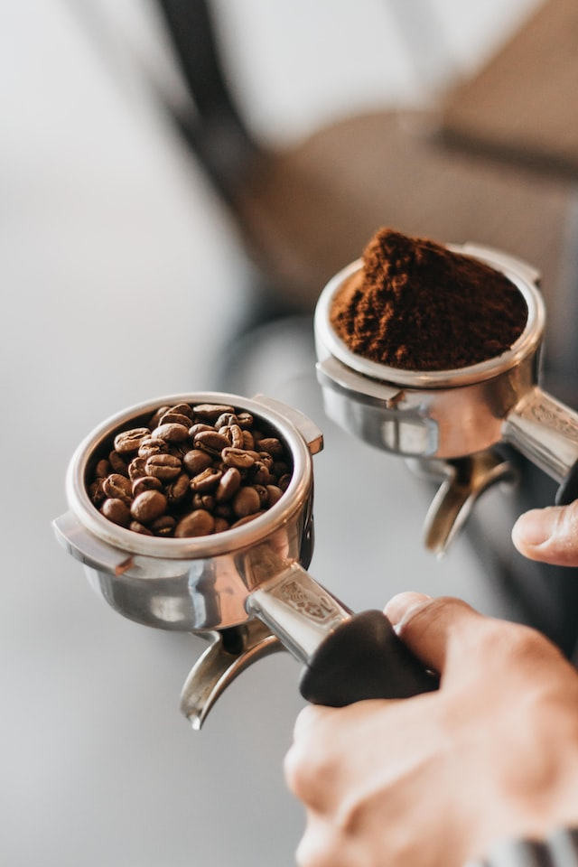
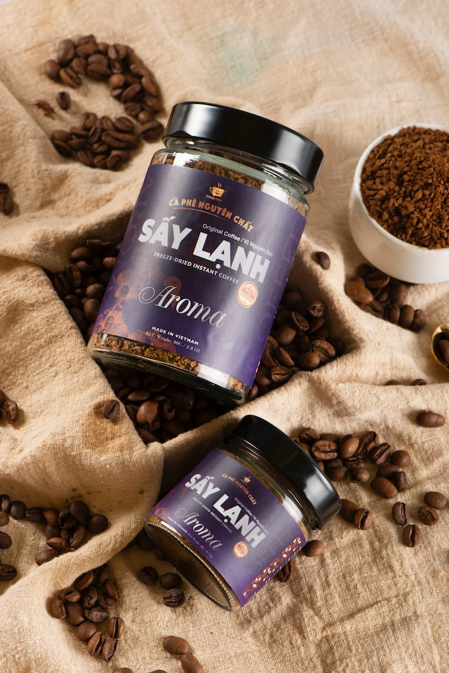

Variedades de café
Variedades de café
Descubre por qué Arabica y Robusta son las variedades de café más populares en el mundo y por qué debes probarlas.

Arábica
El café Arabica es una variedad antigua con un sabor suave y aroma único. Tiene menos amargor y cafeína que otras variedades. Se cultiva en regiones cálidas y húmedas y es conocido por sus notas complejas de frutas, flores y especias. Es una opción popular para quienes buscan calidad y sabor distinto.
- Sabor suave y bien equilibrado.
- Más de 500m de altitud.
- 70% de la producción mundial.
- Más caro.

Robusta
Esta variedad es la que abarca un tercio del café consumido en el mundo, con un fuerte sabor, amargor y color oscuro. A diferencia de la variedad arábica, tiene más cafeína y menos aroma. Su precio es menor que la variedad arábica.
- Utilizado habitualmente como café instántaneo.
- Entre 200/800m de altitud.
- Mayor concentración de cafeina.
- Las plantas florecen todo el año.